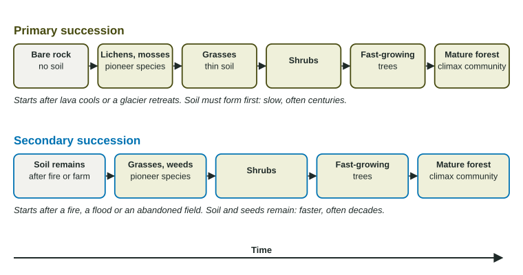

After a fire, a flood or a volcanic eruption, an ecosystem does not stay empty. Plants and animals return, and the community changes in a predictable series of stages. Ecological succession is the name for that series of changes. Knowing which kind of succession is happening, and why it is fast or slow, is a favorite exam question.
Primary and secondary succession

| Primary succession | Secondary succession | |
|---|---|---|
| Starts with | bare rock, no soil, no life | soil, often with seeds and roots |
| Examples | cooled lava, rock left by a retreating glacier, a new volcanic island | a forest after a fire, a hurricane or logging; an abandoned farm field; a floodplain after a flood |
| Pioneer species | lichens and mosses | grasses, weeds, wildflowers |
| Speed | slow, often centuries, because soil must form first | faster, often decades |
The deciding question is always: was soil there at the start? If yes, it is secondary, however much was burned or flattened.
How the stages unfold
Pioneer species arrive first. They grow fast, spread easily (by spores, wind-blown seeds or birds) and tolerate harsh, open conditions. On rock, lichens release acids that weather the rock surface, and their remains add dead material. Mosses trap dust and water. Bit by bit, thin soil forms.
Each stage changes the site for the next. Grasses add roots and organic matter, so soil deepens and holds more water and nutrients. Shrubs and fast-growing trees then shade out the sun-loving grasses. Later, slower-growing trees that tolerate shade take over. Over time:
- soil becomes deeper and richer;
- total biomass increases, as small plants are replaced by trees;
- species richness generally increases, often peaking in the middle stages;
- net productivity (the new plant growth added each year) is high in the fast-growing early and middle stages and falls toward zero in an old forest, where growth is roughly balanced by respiration and decay;
- the community becomes more stable.
If there is no major disruption for a long time, a mature, relatively stable climax community develops, such as an old oak and hickory forest. In many places, regular disruptions such as fire reset part of the landscape, so a region holds patches at several stages at once.
Worked example. An abandoned field had 12 plant species one year after farming stopped and 38 species after 20 years. What is the percent change?
Setup: . Answer: .
Richness more than tripled as grasses, wildflowers, shrubs and young trees joined the first weeds. Because the field kept its soil, this is secondary succession.
Speeding up or slowing down succession
Anything that brings back soil, seeds or nutrients speeds succession: animals that dig up old soil, wind that blows in seeds, people who spread fresh soil and plant native seed when restoring land. Anything that removes soil or keeps disrupting the site slows it: erosion, repeated fires, grazing, or covering the ground with pavement.
On the exam
- Identify the kind of succession from the starting condition (soil or no soil), and name it with its reason.
- Name pioneer species correctly: lichens and mosses on rock; grasses and weeds on soil.
- Describe trends from data: richness and biomass over time, quoting the numbers.